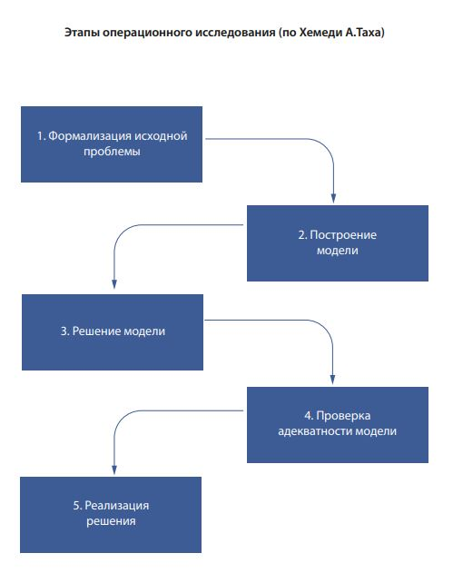

Исследование операций - научное направление, которое занимается разработкой и применением методов оптимизации на основе математического моделирования и различных эвристических подходов.
Методы исследования операций применяются в тех случаях, когда требуется организовать какое-то целенаправленное мероприятие, которое можно организовать тем или другим способом, выбрать некоторое решение из ряда возможных вариантов. Причем каждый из вариантов обладает некоторыми преимуществами и недостатками, а в силу сложившийся ситуации, сразу не ясно, какой из вариантов предпочтительнее и почему.
Цель исследования операций — предварительное количественное обоснование оптимальных решений с опорой на показатель эффективности. Само принятие решения выходит за рамки исследования операций и относится к компетенции ответственного лица (лиц) принимающего решение (ЛПР).
Методы исследования операций эффективны в отношении хорошо структурированных проблем. Хорошо структурируемые (или хорошо формализуемые) проблемы (задачи) допускают количественную формулировку, их наиболее существенные зависимости выражаются объективными моделями и представляются в символьной форме, где символы принимают числовые значения. Методология исследования операций помимо расчётов, уделяет внимание процессу постановки задачи, выбору математических моделей, интерпретации и осмыслению результатов расчёта.
Многие работы по исследования операций базируются на методах математического программирования. В отличие от чисто математических методов, они имеют средства постановки задачи, позволяют получать область допустимых решений и варианты решений. Кроме того, модель математического программирования позволяет учитывать несколько критериев (в виде целевой функции и ограничений), что повышает объективность принятия решений.
Наряду с направлением, ориентированным на модели математического программирования, исследование операций включает методы и модели базирующееся на математической статистике и теории вероятностей. В число методов исследования операций также входят методы теории игр, математической логики, теории графов и другие методы дискретной математики.
Таким образом, сложился ряд направлений исследования операций, основанных на применении различных методов: операции управления запасами, операции установления износа и замены оборудования, операции распределения, операции составления расписания и календарного планирования, то есть направлений, базирующихся на всех основных задачах математического программирования , операции массового обслуживания, конфликтные операции, базирующиеся на применении теории игр и т.д.